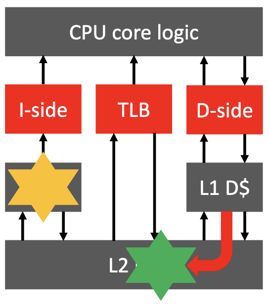

| Source: | https://ashw.io/blog/xen-summit-2021-talk |
|---|
Earlier this year I attended the Xen Project Developer & Design Summit 2021 and delivered a talk on Arm’s weakly-ordered memory model and the need for correct, minimally intrusive barriers; check out the recording below! You can also find a PDF doc of my slides here.
